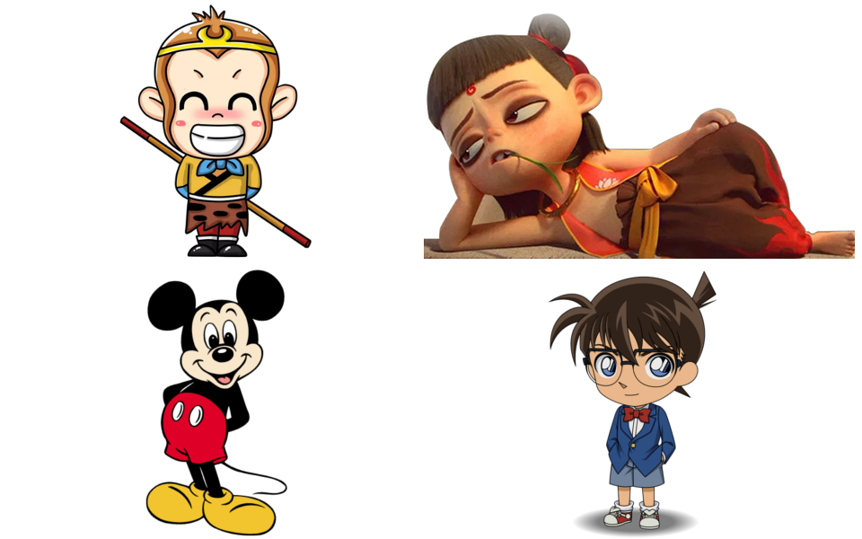

制作动画
（Make-A-Cartoon）
schedule45-90 分钟
stars中级（Intermed.）
face3-5 年级
一. 场景（Connect）

同学们，你们知道什么是动画吗？动画的原理是什么？你们最喜欢哪部动画片？你们认识哪些动画大师？你能用机械积木来制作动画吗？
一. 场景（Connect）
- 【什么是动画】动画即运动着的图画。多张静态“图画”，以“某种运动方式”依次呈现到眼睛，形成动画。
- 【动画的原理】利用了人眼的“视觉暂留”特性。医学证明，人眼看到一幅画后，在 0.34 秒内不会消失，那么在一幅画消失前，又看到下一幅画，人眼就会感受到流畅的动画视觉效果。
- 【著名动画片】《哪吒之魔童降世》（中国）、《冰雪奇缘》（美国）、《名侦探柯南》（日本）
- 【著名动画大师】万籁鸣（中国动画的奠基者，《大闹天宫》）、华特·迪士尼（美国，《白雪公主》，米老鼠之父）、宫崎骏（日本，《天空之城》《千与千寻》）。
二. 发现问题（Find a Problem）

让我们来使用机械积木制作动画吧！
三. 头脑风暴（Brainstorm）

- 花 3 分钟时间，独自头脑风暴，尽可能多地产生最喜欢的的动画形象，想一想什么机械能让图画运动呢？
- 想法可以用笔画出来，想法可以用积木搭建出来。
- 小组内轮流分享想法，并选择最佳的、可用积木实现的想法。
- 每个小组的想法都是个性化的，不一样的。
- 分享你的想法、思考。
四. 选出最好的想法（Choose the Best Idea）
依据设计标准（Design Criteria），选出最好的想法。
五. 制作（Make）

- 使用积木实现你的想法。
- 在制作过程中，测试和分析你的想法，必要时可进行改进。
六. 评估（Evaluate）

- 依据设计标准，测试和评估模型。
七. 展示（Present）
- 向大家展示你的模型，分享你的想法、草图（Sketche）。
- 把模型放到展示台上，来张合影吧！
八. 整理（Tidy Up）

同学们今天非常棒，最后让我们拆解模型，把积木分类存放到收纳盒吧。